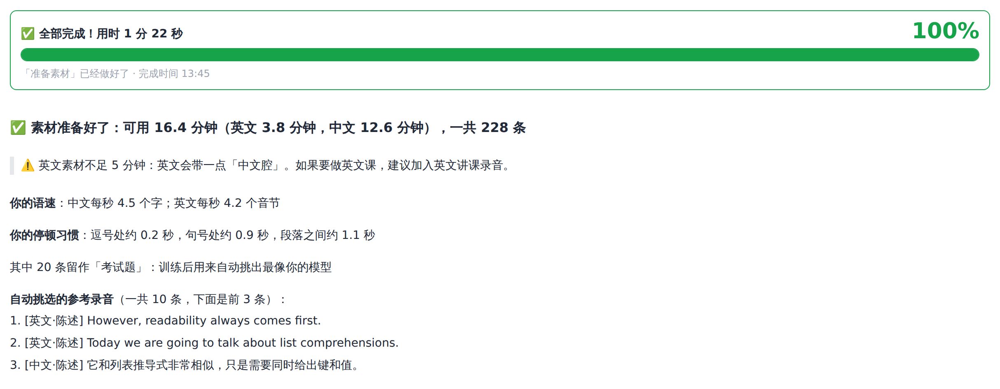
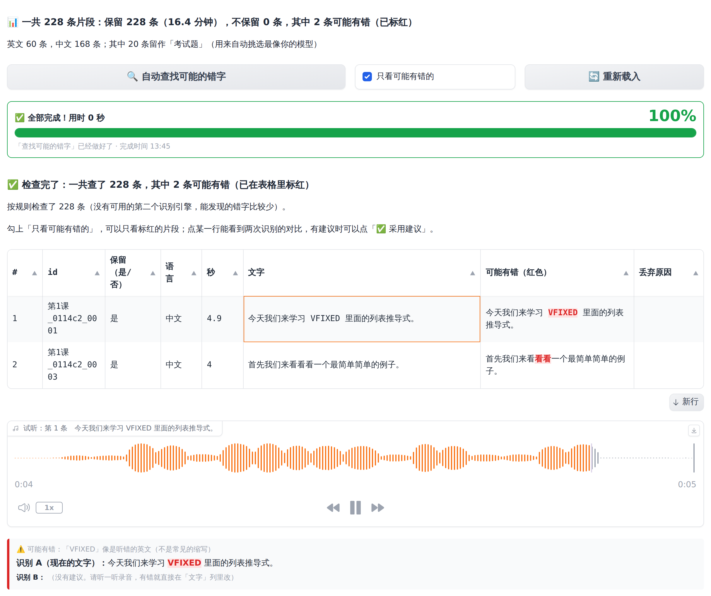

这一步在 ① 准备素材 页面完成。程序会自动：从视频里提取声音 → 清理 → 切成一句一句 → 识别成文字 → 过滤掉质量差的和不是你本人的片段 → 分析你的说话风格 → 挑选参考音频。你只需要填两个地方、点一个按钮，然后看进度条等它做完。
我的声音，按 Enter。名称下面会出现一行提示，例如"「我的声音」是新声音，还没有素材。👉 下一步：……"。\ / : * ? " < > | 这些符号。有两种方式，任选其一：
在 或者填写电脑上的文件夹路径（推荐） 里输入 D:\讲课素材。
优点：不需要上传，视频再大、再多都很快，也不占 C 盘。程序会自动找到文件夹及子文件夹里的所有视频和音频。
点左边的 上传视频/音频/字幕（可多选） 区域，选择文件（按住 Ctrl 可多选），或者直接把文件拖进去。
适合文件较少、较小的情况。大视频上传会比较慢。
一般保持默认即可。视频有背景音乐（去除背景音乐，会慢一些） 直接显示在页面上，其余三项收在 高级设置（一般不用改） 里，点一下才会展开：
| 选项 | 默认值 | 说明与建议 |
|---|---|---|
| 视频有背景音乐 | 不勾选 | 勾选后会用 Demucs 去除背景音乐，需要额外安装 demucs 组件，处理也较慢。一般不勾，推荐用 4.6 节的方法。 |
| 识别文字用哪个引擎 | 通用（中英文都行，推荐） | 通用（中英文都行，推荐）：faster-whisper，中文、英文都识别得好。 纯中文课更准：阿里的 FunASR，纯中文课程识别更准，但英文较弱（需要整合包里带有 funasr，一般都有）。 不识别（只用字幕）：不做识别，只用字幕文件里的文字（所有视频都有字幕时可选）。 |
| 素材语言 | 自动识别 | 自动识别：每一句自动判断是中文还是英文（推荐）。素材全是中文可以选"中文"，全是英文可以选"英文"。 |
| 降噪 | 自动 | 自动：程序估算录音的噪音大小，只有噪音明显时才轻度降噪（推荐）。 开：总是降噪。关：从不降噪。 降噪太狠会损伤音色，所以默认很保守。 |
| 第几步 | 在做什么 |
|---|---|
| 1 | 整理要处理的文件 |
| 2 | 提取声音、降噪、切成小段（有同名字幕时按字幕切） |
| 3 | 识别每段话的文字（第一次会先下载语音识别模型，约 3GB，要几分钟到十几分钟） |
| 4 | 分析语速和停顿 |
| 5 | 检查是不是你本人的声音（用声纹剔除学生提问等） |
| 6 | 挑选参考音频、保存结果 |
| 7 | 分析你的说话风格 |

摘要里每一项的意思（数字以图 6-1 为例）：
| 项目 | 含义 |
|---|---|
| ✅ 素材准备好了：可用 16.4 分钟（英文 3.8 分钟，中文 12.6 分钟），一共 228 条 | 保留下来、能用来训练的是 228 个片段，合计 16.4 分钟你说话的内容，其中中文 12.6 分钟、英文 3.8 分钟。 |
| 自动去掉了 N 条（共 M 种原因） | 被自动删掉的片段数量和原因，见下面的"丢弃原因"表。全部保留时不显示这一项。 |
| ⚠️ 黄色提醒 | 素材可能不够的提醒，见下表。 |
| 你的语速：中文每秒 4.5 个字；英文每秒 4.2 个音节 | 不含停顿时每秒说几个字（音节）。一般人讲课在 3.5~5.5 之间。 |
| 你的停顿习惯：逗号处约 0.2 秒，句号处约 0.9 秒，段落之间约 1.1 秒 | 你在逗号、句号、段落处平均停顿多久。生成时停顿的长短就按这个习惯来（停顿处是完全静音）。 |
| 其中 20 条留作「考试题」 | 程序留出 20 句不参加训练，训练后用它们当"考题"挑选最像你的模型、校准语速和"像你本人（%）"。素材少时会自动少留几条。 |
| 自动挑选的参考录音（一共 10 条，下面是前 3 条） | 最能代表你讲课状态的几句话。[中文·陈述] 表示"中文 / 陈述句"，另外还有"提问""感叹"。 |
校对表上方还有一行总数，例如 "📊 一共 228 条片段：保留 228 条（16.4 分钟），不保留 0 条"，下面一行写着中文、英文各多少条。以后你在校对表里删掉或恢复片段，这一行会跟着变。
黄色提醒的含义和处理：
| 提醒 | 怎么办 |
|---|---|
| 可用素材只有 X 分钟。能训练，但建议 ≥30 分钟，1~3 小时效果最好。 | 可以先继续往下做，看看效果；有条件的话再加素材（重新运行本步骤只会处理新文件）。 |
| 英文素材不足 5 分钟：英文会带一点「中文腔」…… | 只做中文课可以忽略；要做英文课请补充英文讲课录音。 |
| 素材里没有英文…… | 同上。 |
| 有 N 个文件没能处理（后面写着文件名和原因） | 换个文件（例如重新导出视频）后再点 开始准备素材，已经处理好的不会重做。 |
丢弃原因说明（被丢弃的片段不参与训练，可以在第 7 章的校对表里手动恢复）：
| 丢弃原因 | 意思 |
|---|---|
| 没有识别出文字 / 没有有效语音 | 这一段可能是静音、音乐、咳嗽等。 |
| 疑似识别错误 | 识别结果像"谢谢观看""字幕由…"这类常见错误，或同一个词重复很多遍。 |
| 语言不是中文/英文 | 识别为其它语言。 |
| 太短 / 太长 | 短于 2 秒或长于 13 秒，不适合训练。 |
| 有爆音 | 录音音量过大导致失真。 |
| 识别置信度低 / 可能不是语音 | 识别模型自己也不确定，文字很可能不准。 |
| 语速异常（文字可能不对） | 文字长度和音频时长明显对不上，多半是识别错了。 |
| 声音不像本人（可能是别人说话） | 声纹和你的整体声纹差别很大，例如学生提问、插入的视频。 |
| 手动删除 | 你在校对表里把"保留"改成了"否"。 |
| 素材时长 | 大约用时（有 NVIDIA 显卡） |
|---|---|
| 30 分钟 | 5~15 分钟（第一次另加下载识别模型的时间） |
| 1 小时 | 10~30 分钟 |
| 3 小时 | 30~90 分钟 |
你的电脑上具体要多久，看进度条上的"预计几点完成"就行。
训练时，模型会把"这段声音"和"这段文字"一一对应起来学习。如果识别出的文字有错（例如把"推导式"识别成"推倒是"），模型就会学到错误的发音对应关系， 生成时可能出现读错字、吞字、语气奇怪的情况。现在程序可以自动找出可能识别错的字，你只要看一看、听一听、点一点，花 5~20 分钟，效果会明显更好，是性价比最高的一步。
| 列 | 含义 |
|---|---|
| # | 序号（第几条），从 1 开始。 |
| id | 片段编号（"文件名_编号"），不要修改。 |
| 保留（是/否） | "是"参加训练；"否"不参加。 |
| 语言 | 中文 / 英文（一般不用改）。 |
| 秒 | 片段时长。 |
| 文字 | 识别出的文字，可以直接修改。 |
| 可能有错（红色） | 可能识别错的字用红色标出来，有建议时也写在这里。这一列只用来看，改字请改"文字"列。 |
| 丢弃原因 | 被自动丢弃的原因（保留的片段这一栏是空的）。 |
否。想恢复被自动丢弃的片段：把它的"保留"改成 是。
标红只是提醒"可能有错"，不一定真错；也可能有个别错字没被发现。重要的片段最好自己听一听。
没有装第二个识别引擎时，程序会改用识别时的"把握程度"来找；连这个也没有时只按规则检查，结果里会写"没有可用的第二个识别引擎，能发现的错字比较少"，这时更要自己多听一听。
text 列的文字；不想要的行把 keep 改成 0（要恢复就改成 1）。最后一列 audio 是音频文件的位置，可以复制路径去播放。Excel 里看不到红色标记，想用"自动查找错字"请在网页里校对。voicetwin.bat review -v 我的声音 按 Enter，程序会读回你的修改。删掉少量片段不会影响效果，宁缺毋滥。
点 保存修改（或运行 voicetwin.bat review）后，程序会自动重新统计语速、重新过滤、重新挑选参考音频，并更新你的说话风格档案。然后就可以进入第 8 章开始训练了。
如果你是在训练之后才校对的，校对完需要重新训练一次，修改才会生效。